Código
# 📚 Bibliotecas
library(tidyverse)
library(shiny)
library(plotly)
library(gridExtra)
library(lubridate)# 📚 Bibliotecas
library(tidyverse)
library(shiny)
library(plotly)
library(gridExtra)
library(lubridate)📑 Na base sobre absenteísmo haviam o registros de 12 hospitais, sendo que o Hospital de Messejana apresentou todos os registros NA.
📑 Na base sobre os disparos de WhatsApp haviam o registro 68 hospitais
# dados processados sobre absenteismo
df_absenteismo = read.csv('absenteismo_processed.csv')
# dados processados sobre alertas no whatsapp
df_whatsapp = read.csv('whatsapp_processed.csv')📑 Para a análise exploratória dos dados foram considerados os registros dos hospitais presentes nas duas bases disponibilizadas. Além disso, o HOSPITAL DE MESSEJANA não apresentou registros na base de absenteísmo.
hospitais = unique(df_absenteismo$hospital_padronizado)
hospitais = hospitais[hospitais != 'HOSPITAL DE MESSEJANA']
hospitais [1] "HOSPITAL JOSE MARTINIANO DE ALENCAR"
[2] "HOSPITAL DE SAÚDE MENTAL PROFESSOR FROTA PINTO"
[3] "HOSPITAL ESTADUAL LEONARDO DA VINCI"
[4] "HOSPITAL GERAL FORTALEZA"
[5] "HOSPITAL GERAL WALDEMAR ALCANTARA"
[6] "HOSPITAL REGIONAL DO CARIRI"
[7] "HOSPITAL REGIONAL DO SERTAO CENTRAL"
[8] "HOSPITAL REGIONAL NORTE"
[9] "HOSPITAL REGIONAL VALE DO JAGUARIBE"
[10] "HOSPITAL SÃO JOSÉ DE DOENÇAS INFECCIOSAS"
[11] "HOSPITAL UNIVERSITÁRIO DO CEARÁ" 📑 Inicialmente, analisou-se o total de agendamentos, o total de faltas e a taxa de absenteísmo geral e por unidade hospitalar. No geral, os meses com os maiores números de faltas foram os meses de outubro de 2024, novembro de 2024, agosto de 2024 e dezembro de 2024, respectivamente. Também, observa-se uma queda consecutiva na taxa absenteísmo nos últimos três meses.
# calcular os totais e a taxa de absenteísmo
df_totais = df_absenteismo |>
group_by(periodo) |>
summarise(Faltas = sum(faltas, na.rm = TRUE),
Agendamentos = sum(agendamentos, na.rm = TRUE),
TaxaAbsenteismo = (sum(Faltas) / sum(Agendamentos)) * 100,
.groups = 'drop')
# calcular o fator de escala para a linha
max_quantidade = max(df_totais$Faltas, df_totais$Agendamentos, na.rm = TRUE)
fator_escala = max_quantidade / 100
# 📈 contruindo o grafico com os tres indicadores
df_totais |>
pivot_longer(
cols = c(Faltas, Agendamentos),
names_to = 'Tipo',
values_to = 'Quantidade') |>
ggplot(aes(x = periodo)) +
geom_bar(aes(y = Quantidade, fill = Tipo),
stat = 'identity', position = 'dodge', alpha = 0.8) +
geom_text(aes(y = Quantidade/2, label = ifelse(Tipo == 'Faltas', Quantidade, ''),
group = Tipo),position = position_dodge(width = 0.9),
color = 'white', size = 3.5, fontface = 'bold',
show.legend = FALSE) +
geom_text(aes(y = Quantidade, label = ifelse(Tipo == 'Agendamentos', Quantidade, ''), group = Tipo),
position = position_dodge(width = 0.9),
vjust = -0.5, size = 3.5, fontface = 'bold', color = '#3BA9DB',
show.legend = FALSE) +
# Linha para a taxa de absenteísmo
geom_line(aes(y = TaxaAbsenteismo * fator_escala, group = 1),
color = '#2c5282', size = 1.5, alpha = 0.8) +
geom_point(aes(y = TaxaAbsenteismo * fator_escala),
color = '#2c5282', size = 3) +
geom_text(aes(y = TaxaAbsenteismo * fator_escala,
label = paste0(round(TaxaAbsenteismo, 1), '%')),
vjust = -1, size = 3.5, color = '#2c5282', fontface = 'bold') +
# Linha pontilhada vermelha no mês 2025 - 03
geom_vline(xintercept = which(unique(df_totais$periodo) == '2025 - 03'),
linetype = 'dashed', color = 'red3', size = 1) +
scale_y_continuous(
name = '',
sec.axis = sec_axis(~ . / fator_escala,
name = '',
labels = function(x) paste0(round(x, 2), '%'))
) +
labs(title = '', x = '', fill = '') +
theme_minimal() +
theme(
axis.text.x = element_text(angle = 45, hjust = 1),
axis.title.y.left = element_text(color = 'black'),
axis.text.y.left = element_text(color = 'black'),
axis.title.y.right = element_text(color = 'black'),
axis.text.y.right = element_text(color = 'black'),
panel.grid.major.y = element_line(color = 'gray80'),
panel.grid.minor.y = element_blank(),
legend.position = 'top'
) +
scale_fill_manual(values = c('Faltas' = '#1C4F66', 'Agendamentos' = '#3BA9DB'))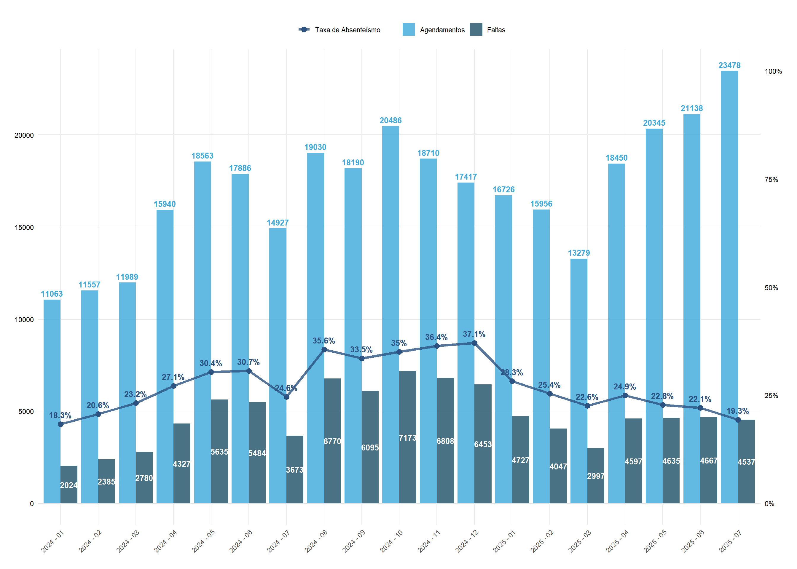
# 📈 gerando o grafico com os tres indicadores para cada hospital
hospitais = unique(df_absenteismo$hospital_padronizado)
hospitais = hospitais[hospitais != 'HOSPITAL DE MESSEJANA']
criar_grafico_hospital = function(hospital_nome) {
# filtrar dados para o hospital especifico
df_hospital = df_absenteismo |>
filter(hospital_padronizado == hospital_nome) |>
group_by(periodo) |>
summarise(
Faltas = sum(faltas, na.rm = TRUE),
Agendamentos = sum(agendamentos, na.rm = TRUE),
TaxaAbsenteismo = ifelse(Agendamentos > 0, (Faltas / Agendamentos) * 100, 0),
.groups = 'drop'
)
# calcular fator de escala para este hospital
max_quantidade = max(df_hospital$Faltas, df_hospital$Agendamentos, na.rm = TRUE)
if (max_quantidade == 0 || is.infinite(max_quantidade)) {
fator_escala = 1
} else {
fator_escala = max_quantidade / 100
}
# criar o gráfico
p = df_hospital |>
pivot_longer(
cols = c(Faltas, Agendamentos),
names_to = 'Tipo',
values_to = 'Quantidade') |>
ggplot(aes(x = periodo)) +
geom_bar(aes(y = Quantidade, fill = Tipo),
stat = 'identity', position = 'dodge', alpha = 0.8) +
geom_text(aes(y = Quantidade/2, label = ifelse(Tipo == 'Faltas', Quantidade, ''),
group = Tipo),
position = position_dodge(width = 0.9),
color = 'white', size = 3, fontface = 'bold',
show.legend = FALSE) +
geom_text(aes(y = Quantidade, label = ifelse(Tipo == 'Agendamentos', Quantidade, ''),
group = Tipo),
position = position_dodge(width = 0.9),
vjust = -0.5, size = 3, fontface = 'bold', color = '#3BA9DB',
show.legend = FALSE) +
# Adicionar esteticas para a legenda da taxa
geom_line(aes(y = TaxaAbsenteismo * fator_escala, group = 1, color = 'Taxa de Absenteísmo'),
size = 1.5, alpha = 0.8) +
geom_point(aes(y = TaxaAbsenteismo * fator_escala, color = 'Taxa de Absenteísmo'),
size = 3) +
geom_text(aes(y = TaxaAbsenteismo * fator_escala,
label = paste0(round(TaxaAbsenteismo, 1), '%')),
vjust = -1, size = 3, color = '#2c5282', fontface = 'bold') +
# Linha pontilhada vermelha no mês 2025 - 03
geom_vline(xintercept = which(unique(df_hospital$periodo) == '2025 - 03'),
linetype = 'dashed', color = 'red3', size = 1) +
scale_y_continuous(
name = '',
sec.axis = sec_axis(~ . / fator_escala,
name = '',
labels = function(x) paste0(round(x, 1), '%'))
) +
labs(
title = hospital_nome,
x = '',
fill = '',
color = ''
) +
theme_minimal() +
theme(
axis.text.x = element_text(angle = 45, hjust = 1, size = 8),
axis.title.y.left = element_text(color = 'black'),
axis.text.y.left = element_text(color = 'black'),
axis.title.y.right = element_text(color = 'black'),
axis.text.y.right = element_text(color = 'black'),
panel.grid.major.y = element_line(color = 'gray80'),
panel.grid.minor.y = element_blank(),
legend.position = 'top',
plot.title = element_text(face = 'bold', hjust = 0.5, size = 12),
legend.box = 'horizontal'
) +
scale_fill_manual(values = c('Faltas' = '#1C4F66', 'Agendamentos' = '#3BA9DB')) +
scale_color_manual(values = c('Taxa de Absenteísmo' = '#2c5282')) +
guides(
fill = guide_legend(order = 1),
color = guide_legend(order = 2)
)
return(p)
}
# criar gráficos para cada hospital
for (hospital in hospitais) {
print(criar_grafico_hospital(hospital))
}
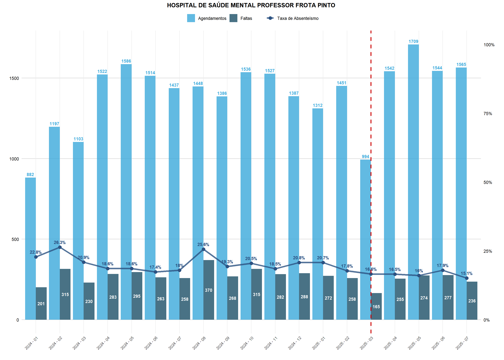
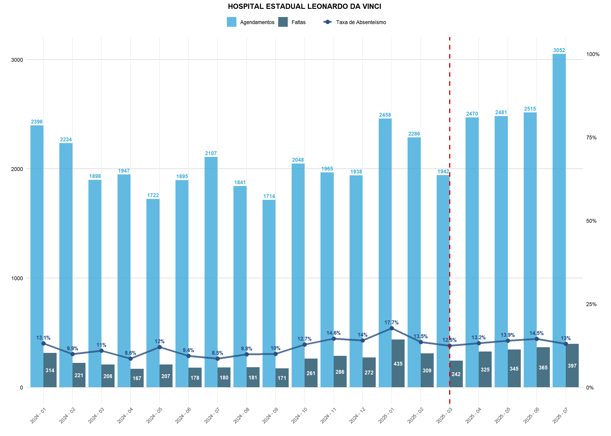
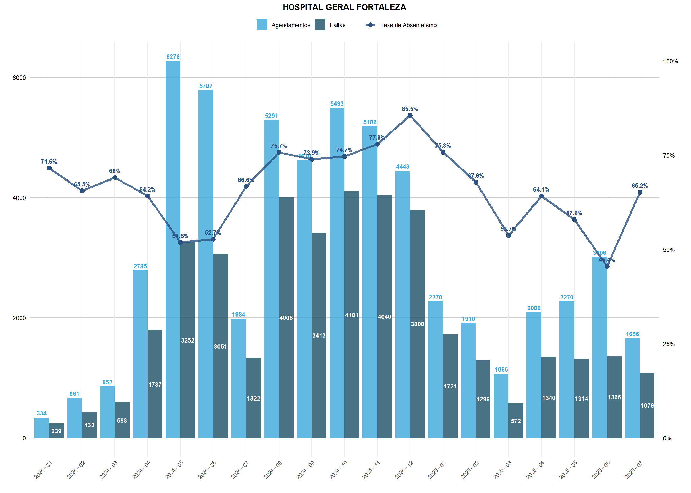
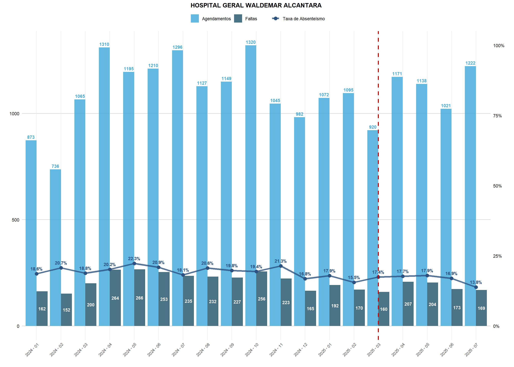
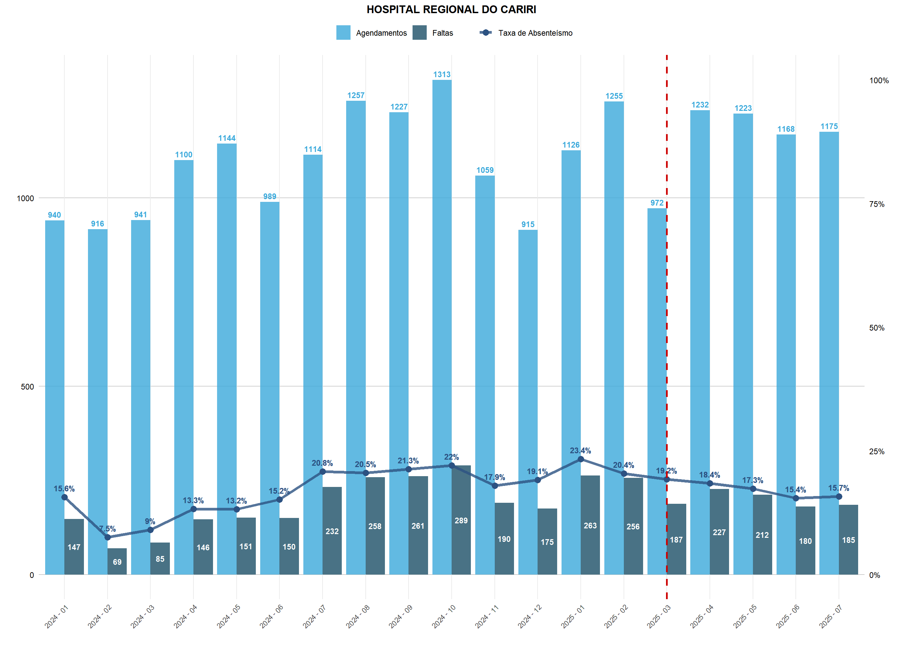
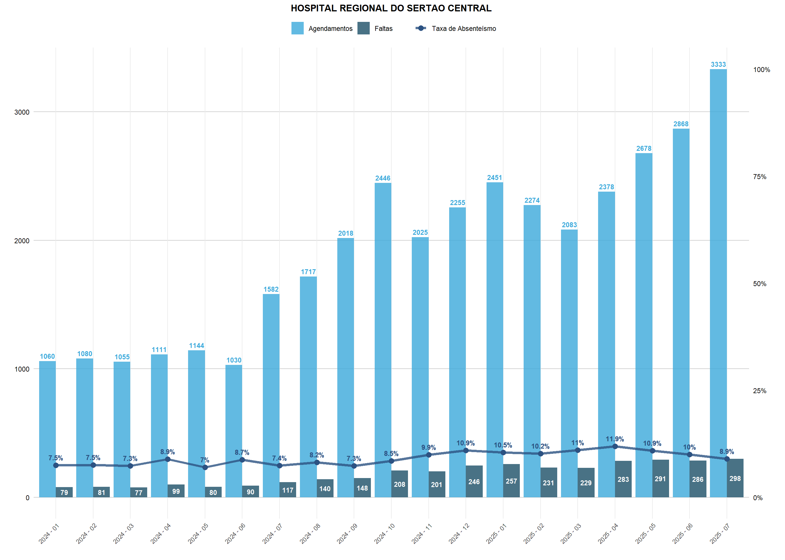
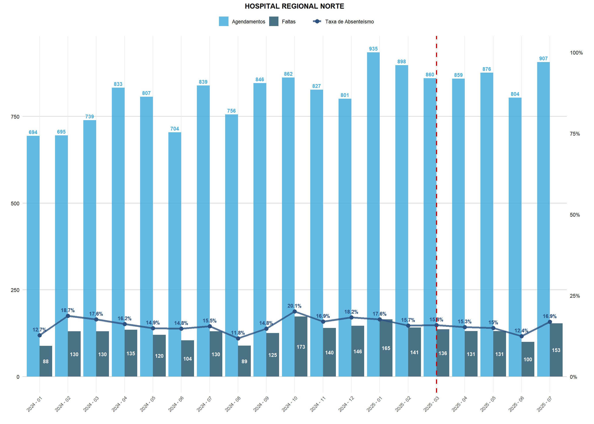
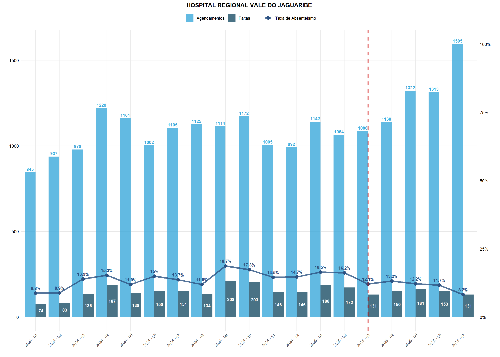
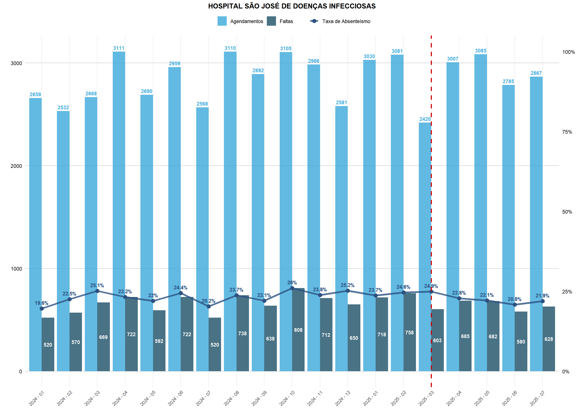
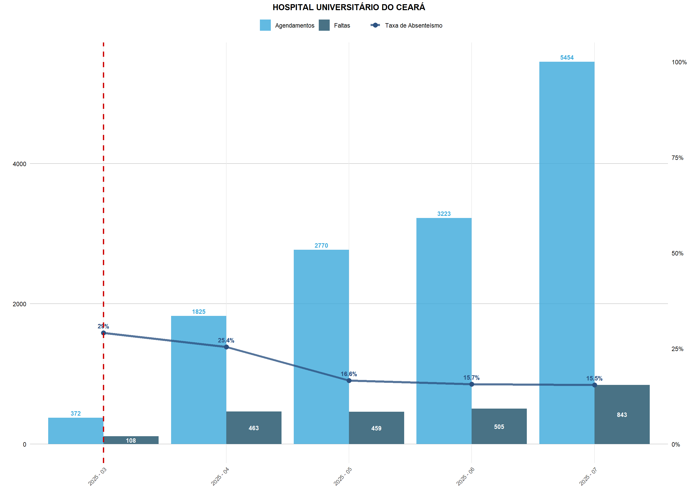
Verifica-se que o Hospital Geral de Fortaleza e o Hospital José Martiniano de Alencar apresentaram as maiores taxas de absenteísmo, ultrapassando 80% em alguns meses, mesmo após a implementação dos disparos via WhatsApp. Nos demais hospitais, as taxas permaneceram em níveis consideravelmente mais baixos, variando entre 10% e 20%.
# 📊 medidas descritivas sobre a taxa de absenteismo para cada hospital
df_absenteismo |>
filter(hospital_padronizado != 'HOSPITAL DE MESSEJANA') |>
group_by(hospital_padronizado) |>
summarise(taxa_media = mean(taxa_absenteismo, na.rm = TRUE),
taxa_mediana = median(taxa_absenteismo, na.rm = TRUE),
dp_taxa = sd(taxa_absenteismo, na.rm = TRUE),
cv_taxa = sd(taxa_absenteismo, na.rm = TRUE) / mean(taxa_absenteismo, na.rm = TRUE)) |>
mutate(cv_taxa = scales::percent(cv_taxa, accuracy = 0.01)) |>
knitr::kable(digits = 2)| hospital_padronizado | taxa_media | taxa_mediana | dp_taxa | cv_taxa |
|---|---|---|---|---|
| HOSPITAL DE SAÚDE MENTAL PROFESSOR FROTA PINTO | 19.36 | 18.59 | 3.01 | 15.56% |
| HOSPITAL ESTADUAL LEONARDO DA VINCI | 12.20 | 12.74 | 2.40 | 19.67% |
| HOSPITAL GERAL FORTALEZA | 66.27 | 66.63 | 10.33 | 15.58% |
| HOSPITAL GERAL WALDEMAR ALCANTARA | 18.66 | 18.56 | 2.11 | 11.32% |
| HOSPITAL JOSE MARTINIANO DE ALENCAR | 61.07 | 58.99 | 10.32 | 16.89% |
| HOSPITAL REGIONAL DO CARIRI | 17.13 | 17.94 | 4.25 | 24.82% |
| HOSPITAL REGIONAL DO SERTAO CENTRAL | 9.08 | 8.91 | 1.54 | 16.97% |
| HOSPITAL REGIONAL NORTE | 15.83 | 15.70 | 2.15 | 13.57% |
| HOSPITAL REGIONAL VALE DO JAGUARIBE | 13.39 | 13.67 | 2.88 | 21.53% |
| HOSPITAL SÃO JOSÉ DE DOENÇAS INFECCIOSAS | 23.09 | 23.21 | 1.77 | 7.66% |
| HOSPITAL UNIVERSITÁRIO DO CEARÁ | 20.42 | 16.57 | 6.34 | 31.04% |
# filtrando os registros que estao em ambas as bases
df_whatsapp_filtrado = df_whatsapp |>
inner_join(df_absenteismo |>
select(hospital_padronizado) |>
distinct(), by = 'hospital_padronizado') |>
filter(hospital_padronizado != 'HOSPITAL DE MESSEJANA')Foi realizada uma análise dos disparos de WhatsApp nos hospitais presentes na base de absenteísmo. Observa-se que o Hospital Geral de Fortaleza (HGF) concentra o maior número de disparos, registrando volume 13 vezes superior ao do segundo colocado, o Hospital Regional do Sertão Central. Esse resultado acompanha o fato de o HGF também ser o hospital com maior número de agendamentos, embora, nesse caso, a diferença em relação aos demais não seja tão expressiva.
Por outro lado, o Hospital José Martiniano de Alencar apresentou a menor quantidade de disparos, ponto que merece atenção, já que é uma das unidades com maiores taxas de absenteísmo.
Em relação ao tipo de disparo, os de agendamento foram os mais frequentes, seguidos pelos disparos de pré 2 dias e pré 10 dias.
# total de disparos por hospital
df_disparos = df_whatsapp_filtrado |>
group_by(hospital_padronizado) |>
summarise(disparos = sum(count, na.rm = TRUE)) |>
arrange(desc(disparos))
df_disparos |>
ggplot(aes(x = reorder(hospital_padronizado, disparos), y = disparos)) +
geom_bar(stat = 'identity', fill = '#3BA9DB', alpha = 0.8) +
geom_text(aes(label = disparos),
hjust = -0.1, size = 3.5, fontface = 'bold', color = 'black') +
coord_flip() +
labs(title = '',
x = '',
y = '') +
theme_minimal() +
theme(axis.text.y = element_text(size = 9),
axis.text.x = element_blank(),
plot.title = element_text(face = 'bold', hjust = 0.5),
panel.grid.major.y = element_blank()) +
scale_y_continuous(expand = expansion(mult = c(0, 0.1)))
# 📈 visualizacao do total de disparos por hospital
df_whatsapp_filtrado |>
group_by(hospital_padronizado, tipo_alerta) |>
summarise(Total_Disparos = sum(count, na.rm = TRUE), .groups = 'drop') |>
ggplot(aes(x = tipo_alerta, y = hospital_padronizado, fill = Total_Disparos)) +
geom_tile(color = 'white', linewidth = 0.3) +
geom_text(aes(label = ifelse(Total_Disparos > 0,
format(Total_Disparos, big.mark = '.'),
'')),
color = 'white', size = 2.5, fontface = 'bold') +
scale_fill_gradient(low = 'lightblue', high = 'darkblue', name = '', trans = 'log10') +
labs(title = '', subtitle = paste('Total de', format(sum(df_whatsapp_filtrado$count, na.rm = TRUE), big.mark = '.'), 'Disparos'), x = '', y = '') +
theme_minimal() +
theme(
axis.text.x = element_text(angle = 45, hjust = 1, size = 8),
axis.text.y = element_text(size = 8),
plot.title = element_text(face = 'bold', size = 14, hjust = 0.5),
plot.subtitle = element_text(size = 10, hjust = 0.5),
panel.grid = element_blank(),
legend.position = 'none')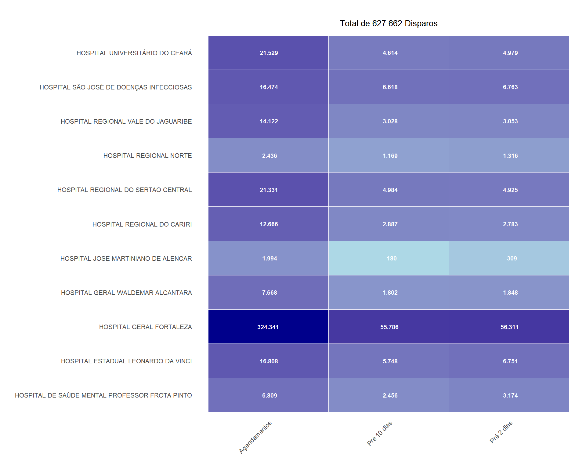
Foi proposta a comparação entre a quantidade de disparos realizados e a taxa de absenteísmo por mês. No entanto, observou-se que a base de envios de WhatsApp disponibilizada não continha registros para todos os meses. Por exemplo, no caso do Hospital Geral de Fortaleza, havia informações apenas para março, junho e julho, enquanto os meses de abril e maio não apresentavam dados de disparos de agendamentos.